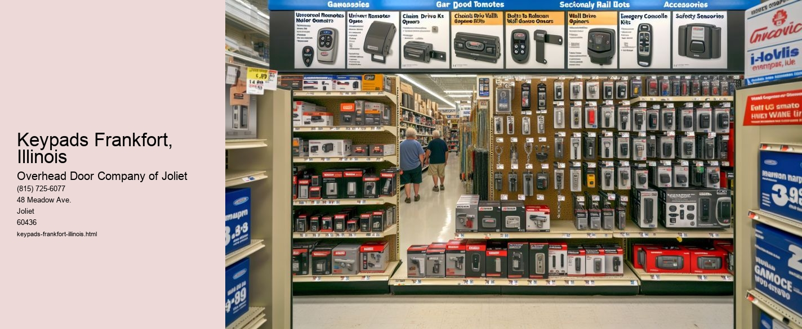

Serving Joliet, IL and surrounding Will County communities including:
Authorized Dealer for Overhead Door™ Openers and Accessories.

Keypads have become an integral part of modern technology, serving as the interface between humans and machines in various devices, from smartphones to ATMs. In Frankfort, Illinois, a charming village that marries small-town charm with suburban convenience, the evolution of keypads reflects the communitys embrace of both tradition and innovation.
Nestled in the heart of Will County, Frankfort is known for its rich history, friendly neighborhoods, and a strong sense of community. The villages quaint downtown area, with its brick-paved streets and historic buildings, provides a nostalgic glimpse into the past while simultaneously embracing the conveniences of modern technology. Keypads, in this context, are emblematic of how technology has been woven into the fabric of daily life in Frankfort.
In Frankfort, keypads are ubiquitous, found in homes, businesses, and public spaces. They are present in security systems, allowing residents to safeguard their homes with personalized codes. At schools, keypads provide an added layer of security, ensuring that only authorized personnel can access certain areas. This blend of safety and convenience is particularly valued in a community that prioritizes both the well-being of its residents and the preservation of its serene environment.
Businesses in Frankfort have also adapted to the keypad trend. Restaurants and cafes use them for taking orders and processing payments, streamlining operations while providing customers with a more efficient and seamless experience. Small businesses, which form the backbone of Frankforts economy, benefit from the security and functionality that keypads offer in managing transactions and inventory.
Moreover, keypads represent a critical component in the healthcare facilities of Frankfort, where they control access to sensitive areas, such as laboratories and patient records. This ensures that confidential information remains protected, reflecting the communitys commitment to privacy and integrity.
The presence of keypads in Frankfort is not merely a reflection of technological advancement; it also signifies a community that values accessibility and adaptability. As technology continues to evolve, Frankfort has shown a willingness to embrace change while maintaining its unique identity. Keypads, in this regard, are a symbol of the balance between modernization and tradition.
In conclusion, keypads in Frankfort, Illinois, serve as more than just functional devices; they are a testament to a community that values security, efficiency, and progress. They illustrate how technology can seamlessly integrate into daily life, enhancing the safety and convenience of a community without overshadowing its historical charm.
Remote Controls Frankfort, Illinois